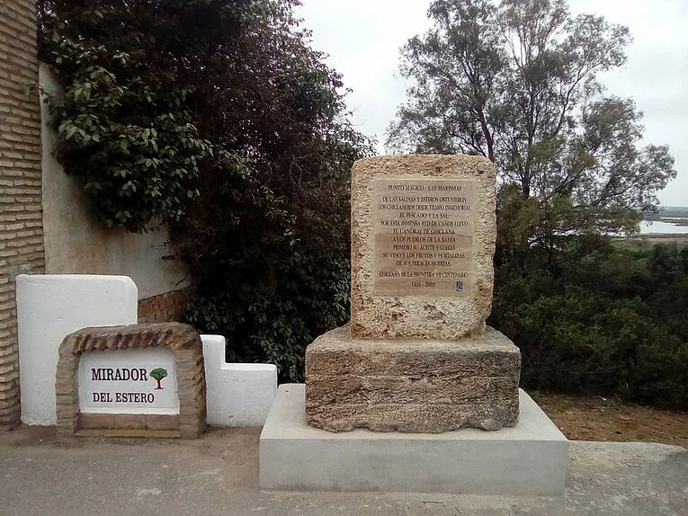
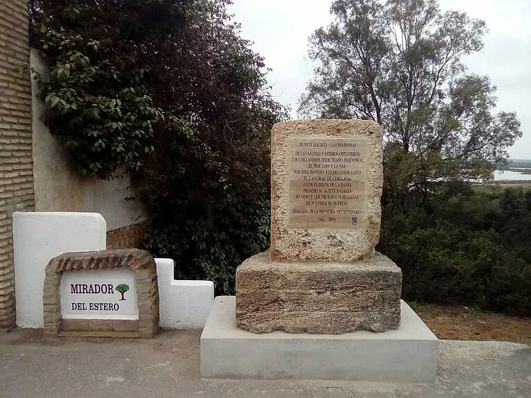

Presentación
En este sitio web se da a conocer el municipo gaditano de Chiclana de la Frontera, y 7 lugares de interés conocidos como "Puntos Mágicos"
El logotipo se ha creado inspirado en la silueta del castillo de Sancti Petri, el más emblemático de los puntos mágicos, durante la puesta de sol.
El siguiente par de imágenes muestra una animación CSS que simula la mencionada puesta de sol, junto con una foto real para tener comparativa. Pase el ratón por encima (o tocalas, si estás en un móvil) para detener la animación.

Chiclana de la Frontera
Chiclana de la Frontera es un municipio español de la provincia de Cádiz, en la comunidad autónoma de Andalucía. Forma parte del área metropolitana de la Bahía de Cádiz-Jerez, tercer área metropolitana de Andalucía
La fundación de la actual Chiclana se produjo en 1303, cuando el rey Fernando IV de Castilla entregó las tierras chiclaneras a la Casa de Medina Sidonia. El actual casco urbano se levanta durante el siglo xviii. En la guerra de la Independencia Española se produjo la batalla de Chiclana entre franceses y aliados anglo-españoles. Hoy en día la economía chiclanera depende de una industria moderna y del turismo, especialmente de las playas y de los campos de golf asentados fundamentalmente en el Novo Sancti Petri, urbanización que cuenta con el mayor número de plazas hoteleras en la provincia de Cádiz y en toda la Costa de la Luz.
El término municipal hace frontera al norte con los municipios de San Fernando y Puerto Real; por la costa hacia el sur con Conil de la Frontera y por tierra limita con Medina Sidonia y una pequeña parte de Vejer de la Frontera. El municipio contaba en 2022 con una población de 87 493.2 y tiene una densidad poblacional de 404,71 hab./km². Sus coordenadas geográficas son 36°25′N 6°09′O y su altitud es de 11 m s. n. m.
Puntos Mágicos
Si te animas a visitar Chiclana, has de saber que los atractivos de los que podrás disfrutar son muchos y variados. Atractivos que están presentes todo el año y que están íntimamente ligados a los paisajes, la historia, la cultura, la gastronomía, el deporte, las fiestas, las tradiciones y, muy en especial, la magia.
Magia que, como podrás descubrir, nos habla de un destino de diversidad, de acontecimientos, de paisajes, de historia, de sensaciones y experiencias… de Chiclana de la Frontera.
Una magia que, de forma muy especial, se escenifica en los llamados puntos mágicos, atalayas desde las que podrás contemplar y entender un poco más y mejor todo eso que ha hecho de Chiclana lo que es hoy día, uno de los mejores destinos turísticos.

 


Carrusel de imágenes de los puntos mágicos
Colina de Santa Ana, Loma del Puerco, Templo de Hércules, Salinas, Miralmar, El Carrascal y La Espartosa, estos son los nombres de siete enclaves chiclaneros que no olvidarás. Atalayas que, estratégicamente, salpican nuestra franja litoral y casco histórico para mostrarte paisajes de extraordinaria belleza.
Puntos mágicos, únicos, desde los que podrás disfrutar de atardeceres indescriptibles, asomarte a entornos naturales de gran singularidad, avistar paisajes que van más allá de nuestras fronteras y ‘leer’ páginas de especial relevancia histórica.
Miradas, siete, que se proyectan sobre lugares tan envolventes como el islote en el que, hace ahora tres mil años, los fenicios levantaron el Templo de Melkart o el Parque Natural de la Bahía de Cádiz, refugio privilegiado de miles de aves, y de las que podrás disfrutar a través de cómodos paseos por nuestras calles y playas.